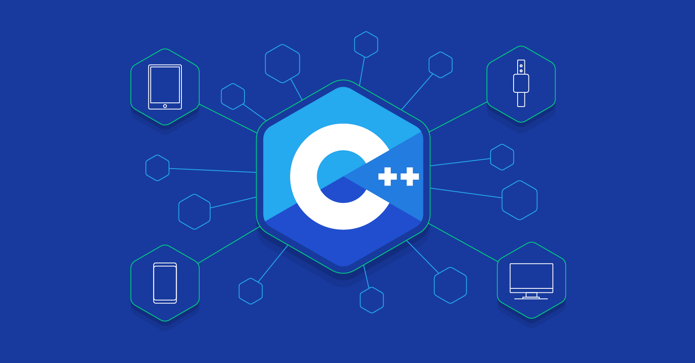

C++
Este lenguaje de programación multiparadigma vio la luz en la década del 70, y como te imaginarás, está fuertemente influenciado y basado en C, con la finalidad de agregarle funcionalidades de orientación a objetos.
Al igual que su predecesor, este lenguaje de programación compila directamente a instrucciones de máquina y ofrece acceso completo al hardware, pero de una manera más compleja. Se utiliza ampliamente en bases de datos, navegadores web, compiladores o videojuegos.
Al ser uno de los lenguajes más difíciles de aprender, C++ ha ido perdiendo aceptación frente a Java. Aun así, sigue siendo uno de los lenguajes preferidos entre programadores y desarrolladores, ya que ofrece un rápido mecanismo de procesamiento y compilación.
Ventajas de C++
C++ se caracteriza por ser extremadamente rápido y estable, lo que lo sitúa como uno de los mejores lenguajes de programación y, por tanto, también uno de los lenguajes de programación más usados.
Una de las principales características de C++ es su extrema rapidez y estabilidad. Cuenta con STL (biblioteca de plantillas estándar), en otras palabras, un conjunto de bibliotecas preparadas para poder usar diversas estructuras de datos, operaciones aritméticas y algoritmos. Contar con el soporte de estas bibliotecas y su velocidad como lenguaje lo convierten en uno de los lenguajes de programación favoritos entre la comunidad comercial de HFT (High Frecuency Trading).
Un poco de su historia:
La historia nos remonta a la figura de Denis Ritchie, quien introdujo por primera vez el lenguaje de programación C en los Laboratorios Bell de AT&T en 1972 y se implementó por primera vez en la computadora DEC PDP-11. Denise Ritchie usó los conceptos de BCPL y B para desarrollar C y agregó la tipificación de datos y algunas otras características poderosas.
Después, en 1979, Bjarne Stroustrup, también empleado de Bell AT & T, comenzó a trabajar en el lenguaje C con las clases. Tomó prestadas las características deseables de muchos otros lenguajes como Simula, Ada, ML, CLU y ALGOL 68. Por lo tanto, además de las características del lenguaje C, C ++ también incluía clases, verificación de tipo fuerte, argumento de función predeterminada y herencia básica. Hasta 1983, se llamaba C con clases, y en 1983 se llamaba C ++.
Fascinado por el enfoque orientado a objetos Stroustrup comenzó a trabajar en C con clases, es decir, comenzó a trabajar en un nuevo lenguaje que tendría un paradigma orientado a objetos mezclado con las características del lenguaje de programación C.
La primera edición comercial del lenguaje de programación C ++ se lanzó en octubre de 1985.